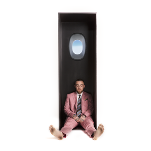

Studio Albums
Early Life and Career
Malcolm James McCormick was born on January 19, 1992, in the Point Breeze neighborhood of Pittsburgh. He was the son of Karen Meyers, a photographer, and Mark McCormick, an architect, and had an older brother, Miller. His mother is Jewish, and his father is Christian. While he and his brother were raised Jewish, he attended a Catholic grade school to "ensure a good education and a chance to play football and lacrosse." He later went to Winchester Thurston School,[8] and graduated from Taylor Allderdice High School.
A self-taught musician, Miller played piano, guitar, drums, and bass by the age of six. He first started rapping at the age of fourteen. Before that, he wanted to be a singer. In high school, he decided to focus on his rap career, later noting, "Once I hit 15, I got real serious about it and it changed my life completely ... I used to be into sports, play all the sports, go to all the high school parties. But once I found out hip-hop is almost like a job, that's all I did." He originally went by the name Easy Mac (often stylized as EZ Mac) and released the mixtape But My Mackin' Ain't Easy in 2007 at the age of fifteen. By 2009, he established himself as Mac Miller, and released two mixtapes: The Jukebox: Prelude to Class Clown and The High Life. At the 2010 Pittsburgh Hip Hop Awards, Miller won 21 & Under of the Year, and Best Hip Hop Video for "Live Free".
Breakthrough Years

Miller signed with the independent label Rostrum Records in July 2010, in the lead-up to his mixtape K.I.D.S. Rostrum president Benjy Grinberg met Miller while recording with Wiz Khalifa at ID Labs. Although Grinberg started giving Miller advice, he did not show interest in getting involved with his career until Miller began work on K.I.D.S., when he "noticed a maturation in his sound and approach to his music." By that point, Miller had started attracting interest from other record companies, but chose Rostrum due to its location in his hometown and association with Wiz Khalifa. K.I.D.S. was released by Rostrum in August 2010. During this time, Miller broke through with a focus on social media engagement, digital sales, and persistent touring, due to a lack of radio airplay or mainstream features.
XXL featured Miller in its annual "Freshman Class" list of 2011, alongside ten other rappers including Kendrick Lamar and Meek Mill. Miller released his fifth mixtape, Best Day Ever, in March 2011. Its single "Donald Trump" became his first song to chart on the US Billboard Hot 100, peaking at number 75, and received a platinum certification from the Recording Industry Association of America (RIAA). Also in March 2011, he released a six-track EP, On and On and Beyond. Intended to target a new audience, four of its tracks were previously included on his mixtapes. The EP was his first entry into the US Billboard 200 albums chart at number 55.

Miller's debut studio album, Blue Slide Park, released on November 8, 2011. With 144,000 first week sales, it debuted atop the Billboard 200, the first independently distributed debut album to do so since Tha Dogg Pound's Dogg Food in 1995. Three songs from the album, "Smile Back", "Frick Park Market", and "Party on Fifth Ave." charted on the Billboard Hot 100, peaking at number 55, 60, and 64, respectively. Blue Slide Park was certified gold in the United States and Canada. Despite its impressive commercial performance, Blue Slide Park received a generally mixed critical response.
On March 23, 2012, Miller released his seventh mixtape, Macadelic. The single "Loud" peaked at number 53 on the Billboard Hot 100. In mid-2012, Miller premiered two songs produced by Pharrell Williams, from a planned collaboration EP, Pink Slime. At least ten tracks were completed by August 2012 according to Miller, but the project was not released despite a multi-year effort. Miller released an EP, You, under the alias Larry Lovestein & The Velvet Revival on November 21, 2012. Rather than rap, the EP features Miller crooning over lounging jazz instrumentals.
In early 2013, Miller founded the record label imprint REMember Music, named after a deceased friend. The label primarily focused on Pittsburgh artists, as well as releases for Miller's alter-egos. Miller starred in a six-episode reality series, Mac Miller and the Most Dope Family, on MTV2. It followed the production of his upcoming second studio album, and premiered on February 26, 2013. On March 4, 2013, Miller released a mixtape, Run-On Sentences Vol. 1, solely featuring instrumentals made by himself, under his production alias Larry Fisherman. Later that month, Miller featured on singer Ariana Grande's lead single "The Way" for her debut album, Yours Truly; the song is Miller's highest peak on the Billboard Hot 100 at number nine, and was certified triple platinum by the RIAA.
His second studio album, Watching Movies with the Sound Off, was released on June 18, 2013. It received generally positive reviews, with most critics praising his new psychedelic sound. The album debuted at number three on the Billboard 200, selling 102,000 copies in its first week. The album spawned three singles; "S.D.S.", "Watching Movies" and "Goosebumpz". The album featured guest appearances from Schoolboy Q, Ab-Soul, Earl Sweatshirt, Tyler, the Creator, Action Bronson and Jay Electronica. According to Miller, the album is "very introspective and very personal so it's kind of throwing it all out there and seeing what happens."
Pittsburgh mayor Luke Ravenstahl presented Miller with a key to the city on September 20, 2013, and declared the date "Mac Miller Day". In collaboration with Vince Staples, Miller produced the mixtape Stolen Youth. Under the moniker Delusional Thomas, Miller self-produced and released an eponymous mixtape, Delusional Thomas, on October 31, 2013. On December 17, 2013, Miller released the live album Live from Space, containing nine songs performed with the band The Internet during his Space Migration Tour and five studio-recorded tracks that were cut from his second album.
GO:OD AM, The Divine Feminine, and Swimming

Miller parted ways with Rostrum Records when his contract expired in January 2014. On May 11, 2014, Miller independently released his tenth solo mixtape, Faces. Colin Stutz of Billboard wrote that the 24-track mixtape "shows [Miller] introspective, ruminating over his drug use, fame and past." Pitchfork's Craig Jenkins called Faces his "most consistently honest and personal work to date." Miller later reflected on Faces, noting his drug-addled lifestyle while recording it. The second season of Miller's reality series Mac Miller and the Most Dope Family aired on MTV2 in mid-2014.
In October 2014, Miller signed a recording contract and distribution deal for REMember Music with the major label Warner Bros. Records. He chose Warner as it was "the most independent thinking" company he met with. Miller's major label debut, GO:OD AM, was released on September 18, 2015. It charted at number four on the Billboard 200, with 87,000 album-equivalent units. The album and the single "Weekend", featuring singer Miguel, were certified gold and platinum by the RIAA, respectively.
Miller began work on his next studio album immediately after completing GO:OD AM, wanting to explore the emotion of love. His fourth studio album, The Divine Feminine, was released on September 16, 2016. The album features Miller singing nearly as much as rapping, and incorporates genres such as R&B, jazz and funk. It received positive reviews, with Pitchfork stating that the album was succinct and refined in its portrayal of love, consequently accentuating Miller's artistry. The Divine Feminine debuted at number two on the Billboard 200 and number one on Billboard's Top R&B/Hip-Hop Albums chart with 48,000 units.
Miller's fifth studio album, Swimming, was released on August 3, 2018, to positive reviews from critics. Pitchfork described the album as consisting of "wistful soul and warm funk", through his exploration of heartbreak and his own mental health issues. Swimming debuted at number three on the Billboard 200 with 66,000 units, his fifth consecutive top five-charting album release in the United States. After his death in September 2018, the single "Self Care" rose to number 33 on the Billboard Hot 100, his highest peak as a lead artist at the time. Swimming was nominated for Best Rap Album at the 61st Annual Grammy Awards.
Posthumous releases
Miller's estate began approving posthumous music releases in June 2019, with the collaborative singles "Time" with Free Nationals and Kali Uchis, and "That's Life" with 88-Keys and Sia. On January 8, 2020, Miller's family announced his first posthumous falbum, Circles, which was released later that month on January 17.
Miller had been working on the album before his death, as a companion album to Swimming. Production was completed by Jon Brion, who worked with Miller on both albums. Circles debuted at number three on the Billboard 200 with 164,000 units, his biggest week for an album. Its single, "Good News", became his highest charting song as lead artist, peaking at number 17 on the Billboard Hot 100
Notable Mixtapes
The Jukebox: Prelude to Class Clown
Best Day Ever
I love life, Thank you
Faces